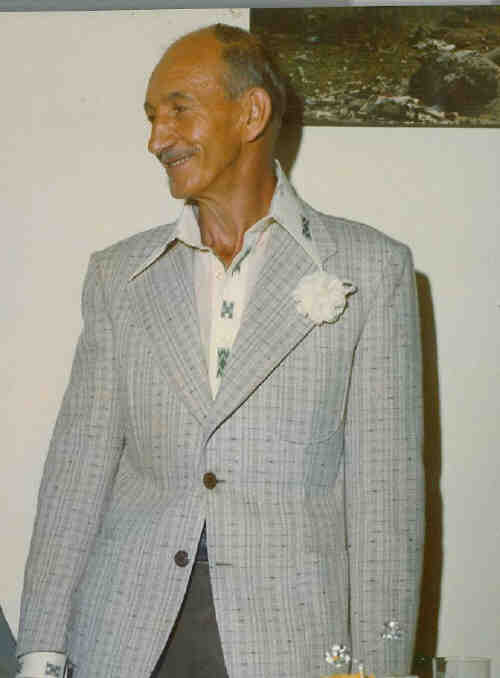
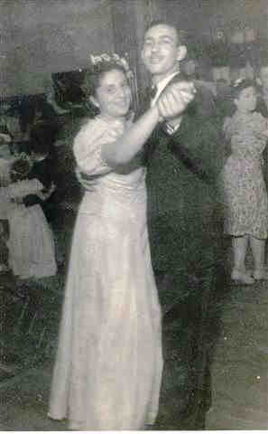
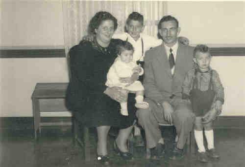

Antônio Natrielli
- Nascido em: 22 Dez 1919, Bela Vista, Sp/Sp
- Casamento: Philomena Petrella em 20 Set 1941
- Falecido: 16 Jul 2003, Sp/Sp com 83 anos de idade

 Notas Gerais: Notas Gerais:
Seu filho Antônio Carlos Natrieli recorda com carinho de seu pai:
"com meu pai (fomos grandes companheiros), do tio Roque também (desde a época da olaria, quando ele passava e me levava nas olarias com ele), fez com que eu, aos 13 anos já dirigisse.
Os amigos e parentes que iam para a casa do vovô no Morumbi, tanto de bonde, descendo no Aleotti, ou de ônibus descendo na Av. Santo Amaro, tinham que pegar táxi. Eles iam mas não podiam voltar.
Se meu pai estivesse em casa, ele até trazia, mas eu, com 7 ou 8 anos. acompanhava meu pai, e ficava do lado dele na direção. Depois, ele me deu o acelerador, o breque. Aí, eu ainda pequeno, já dirigia ao lado dele.
Com 13 anos, ele já me deu o carro, eu ia nas olarias, eu ia para Campo Limpo, a lagoa. Com 14, 15 anos, não tinha tanto movimento, não tinha guardas, então eu aprendi a dirigir automóvel.
Quando os meus parentes iam nos visitar no Morumbi, eles mandavam levar a prima até o ponto do ônibus, lá no Brooklin. Nossa, para mim era uma maravilha!
Aos 16 anos, meu pai estava terminando de montar a olaria no Campo Limpo, eu peguei o caminhão que tinha disponível e fui lá, aplainar o lugar dos terrenos da olaria.
Uma coisa que eu admiro do meu pai, foi ele, a partir de 1945 ou 46, conseguir tirar 21 dias de férias todos os anos, para passar a temporada em Poços de Caldas.
Passava o Natal, passava o réveillon. No primeiro sábado, ele pegava a família, ficava num hotel, às vezes levava até a Tina e a Ciata, ( o hotel era sempre o mesmo, hotel Paulista ).
Esse foi outro momento de convívio com o meu pai, porque a gente ia nas termas, tomava os banhos, aí tinha os passeios que a gente ia fazer na chácara , era gostoso.
Em janeiro, é época do figo, da uva, do pêssego, ocasião que nós íamos passar a tarde nas chácaras, comendo as frutas. Tinha o dia que a gente ia passear a cavalo.
Comecei com o carneirinho, depois o cavalinho, depois o cavalo, aí Boate do Palace. Aí, com 15 anos, já freqüentava a Boate. Não era aquela Boate, era um salão de festas, e ia as tias, primas, as amigas. Então eu tive, desde a infância até moço, o convívio com a família e usufruí sempre dessas amizades.
Isto foi até meu pai se aposentar, em 72. Quando ele passou a batuta, ele ainda não tinha 53 anos. Aí, ele ia para Poços de Caldas e ficava 3 meses . E outra coisa que eu participei com meu pai foi o aprendizado do tênis.
Nós entramos no Banespa e começamos a aprender tênis juntos. Depois, eu parei e ele continuou. Aí, depois, eu recomecei, ai desenvolvi mais em tudo.
O meu pai, no jogo, foi um professor fantástico. Ele me deu de Natal, quando eu tinha uns 8 anos mais ou menos, uma mesa de ping-pong . Eu era pequeno, então a gente ia jogar ping-pong e ele não dava moleza de dar bolinha de bandeja não. Ele jogava esforçando, com isso, eu acabei aprendendo e desenvolvendo . Formamos uma equipe, um timezinho, PENA (Petrella e Natrielli), e nós disputamos alguns torneios. Quem participava era o Caetano, o Núncio, o Nenê, o Nuncinho, o meu pai, o Carlinhos.
Eventos notáveis em Sua vida foram:

(Clique na Foto para vê-la no Tamanho Original)")
• fotos: Andréa - Antônio - Décio.

(Clique na Foto para vê-la no Tamanho Original)")
• fotos: Antonio Natrielli_Filomena_Carmine_Isabel.

• fotos: Antonio Natrielli.

• fotos: Toninho Mena Casamento Xexe_Be.

• fotos: Mena com Maria Virginia - Carlos Antônio - Toninho - Décio -.(1950)

(Clique na Foto para vê-la no Tamanho Original)")
• fotos: Antônio e Philomena.
Antônio casad[:o::a] Philomena Petrella, filha de Ercole Petrella e Maria Bonifácio, em 20 Set 1941. (Philomena Petrella nasceu em em 17 Set 1921 e faleceu em 17 Jul 1999 em Sp/Sp.)
|